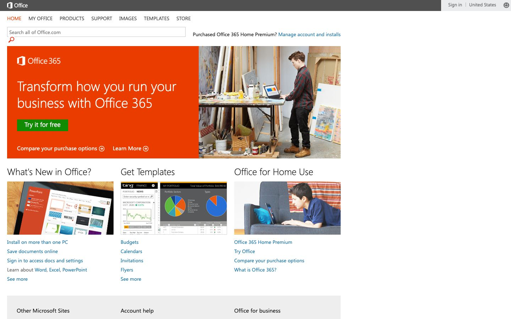

References / Website / 287
Office.com website, 2013
A red-orange Office 365 panel and light Segoe headings on a white page with blue link lists.
- Source
- office.microsoft.com, Office home page (archived copy)
- Creator
- Microsoft
- Made
- 2013
- Style
- Flat design (agent-proposed, not yet reviewed by a person)
- Moods
- Clean, corporate, calm
- Evidence
- Captured with
tools/capture.mjs(headless Chrome, 1440 × 900) on 28 September 2026 from the Wayback Machine copy of 1 April 2013, and inspected. The screenshot shows the first viewport; the measurement covers up to four screens. Nothing covers the page. The headings render in a light Segoe-like face. - Reviewed
- Rights
- Third-party work, stored with credit for commentary. License: unverified. Rights policy
Observed
- A dark gray top bar holds the white Office logo. Below it, uppercase navigation has the active item in red-orange.
- The search field is a thin gray outline with a red-orange magnifier glyph.
- A solid red-orange panel holds the Office 365 logo, the headline “Transform how you run your business with Office 365” in large light white type, and a square green “Try it for free” button. A photograph fills its right half.
- Three columns have large light headings: “What’s New in Office?”, “Get Templates”, and “Office for Home Use”. Each has a picture and a list of blue text links.
- A pale gray band at the bottom holds more headings.
Why it belongs
Measured: headings weight 400 in Segoe UI and Segoe UI Light; 16% of screenshot pixels are saturated; no shadows or gradients. 33% of boxes have a 1 px border, from the search field and hairline dividers on a page with only 9 filled boxes.
Borrow
Put one saturated panel at the top of an otherwise white page, and set its headline in a light weight at large size.
Measured
Machine-extracted by tools/extract-traits.js on . Full measurement.
- Type families
- Segoe UI (93%), Segoe UI Light (7%)
- Type scale ratio
- 1.29
- Median radius
- 0 px
- Mean chroma
- 0.19
- Palette
- #ffffff 61%
- #1570a6 13%
- #eb3c00 11%
- #505050 4%
- #101010 4%
- #eeeeee 4%
- #666666 1%
- #3b3b3b 1%

